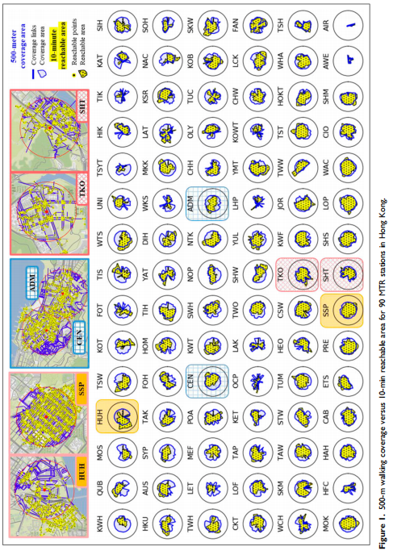
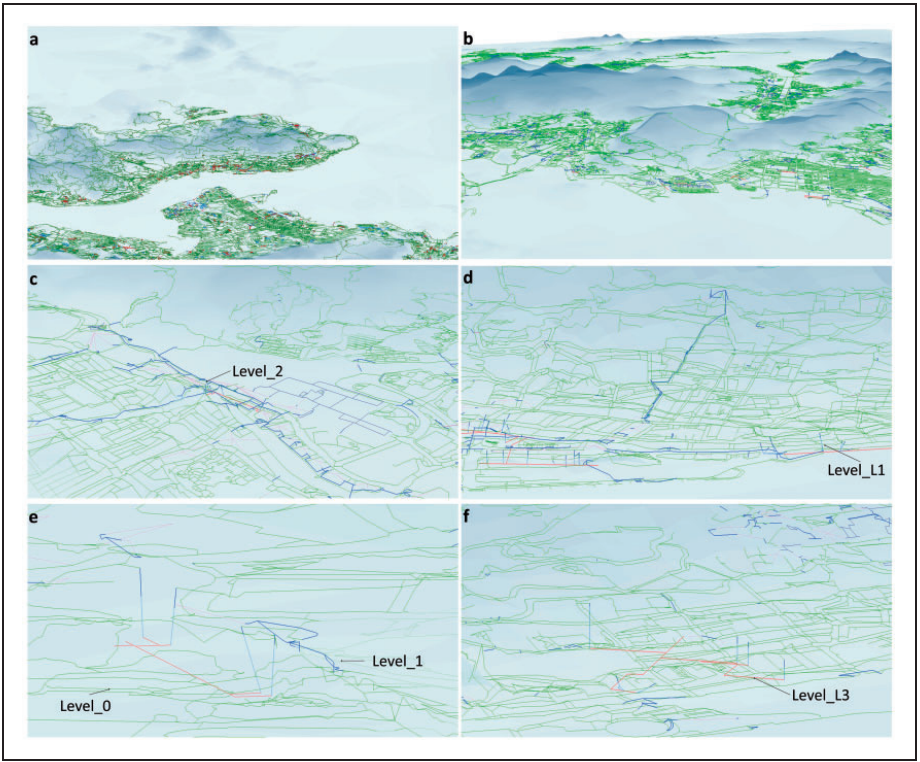
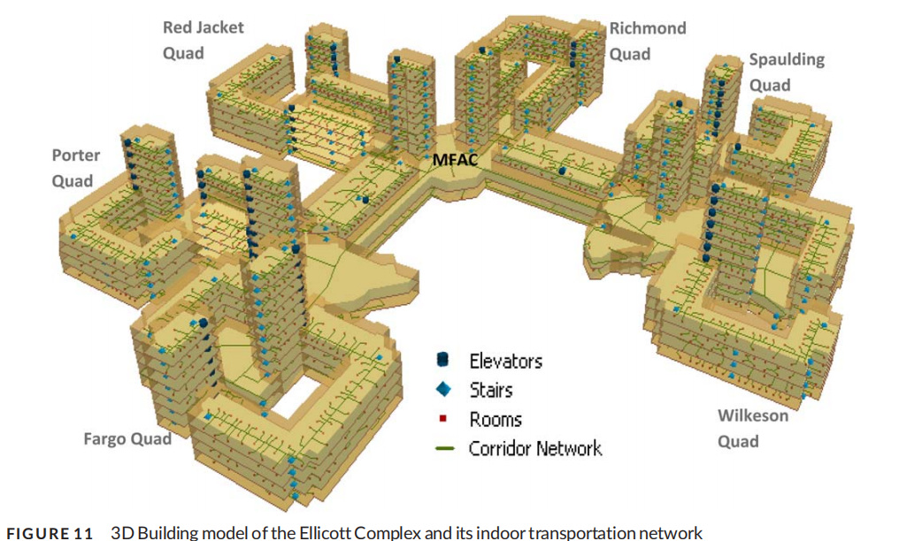
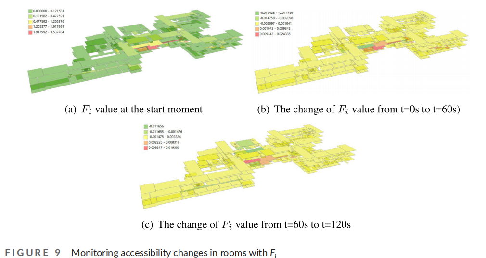
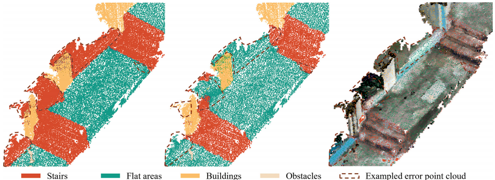
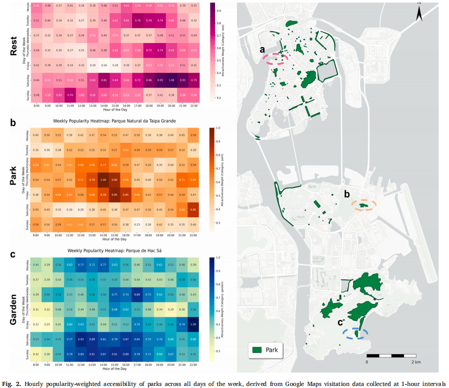
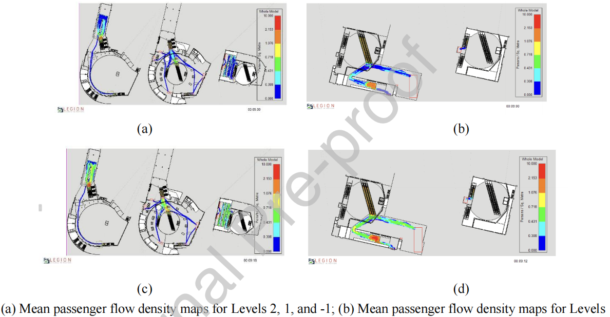

Wᵢ = 6e−3.5 |tanθᵢ + 0.05|
Wᵢ 为路段平均步行速度，θᵢ 为坡度角。上坡与下坡的影响并不对称。
从二维—三维差异，推进到偏差机制、站点竞争与规划解释
“多站点 + 三维网络 + 二维三维对比”已经难以单独构成强方法创新。更有价值的问题是：偏差为什么产生、在哪些站点最显著、如何预测，以及偏差会如何改变站点服务范围与规划判断。
已有文献已完成三维网络建模、站点可达性应用和二维—三维定量比较。
把多站点效应、偏差归因、时空变化和连接设施优化纳入统一研究框架。
除论文 6 外，其余文献按“解决了什么问题—留下什么接口”快速梳理。点击卡片可展开方法与研究启示。

Walk this way: Visualizing accessibility and mobility in metro station areas on a 3D pedestrian network
Environment and Planning B · DOI: 10.1177/23998083221089321
突破二维道路和固定半径缓冲区的限制，更准确地表达高密度城市地铁站周边的真实步行路径与活动空间。
以三维步行网络为空间基础，结合网络最短时间、站点服务范围比较、空间可视化和微观人群仿真。
证明三维网络已能直接服务于轨道站点可达性评价，为多站点偏差规律、服务区竞争和预测模型提供方法基础。

Connecting the city: A three-dimensional pedestrian network of Hong Kong
Environment and Planning B · DOI: 10.1177/2399808319847204
构建能够表达高密度城市立体步行系统的三维网络，弥补二维道路无法区分不同高度连接关系的问题。
在 GIS 中组织不同高程的街道、天桥和地下通道，建立同时包含三维几何与拓扑连接的可计算网络。
明确“二维投影相交”不代表真实连通，并提示研究应分别保证几何、拓扑和通行时间的准确性。

Three-dimensional indoor network accessibility auditing for floor plan design
Transactions in GIS · DOI: 10.1111/tgis.12310
在多楼层建筑内部开展可达性审查，识别空间布局与连接设施对通行的影响。
将房间、走廊、入口和楼梯等垂直设施转译为节点—边网络，再进行路径与可达性分析。
为站厅、站台、商业空间和室外道路的一体化建模提供了可迁移的室内网络方法。

A spatial data model for accessibility with indoor temporal changes
Transactions in GIS · DOI: 10.1111/tgis.13002
解决静态网络无法表达室内空间连通关系随开放时间、障碍和设施状态变化的问题。
在室内网络中加入时间属性，以 G₃ᴅ(t)=(V,E(t)) 表达随时间变化的可通行连接集合。
使站区分析能够考虑早晚高峰、夜间与商业营业时间差异，为动态三维接驳研究奠定基础。

From 3D pedestrian networks to wheelable networks
Computers, Environment and Urban Systems · DOI: 10.1016/j.compenvurbsys.2025.102255
从真实三维街道几何中自动识别影响轮椅通行的坡度、楼梯、宽度和障碍物。
使用智能手机移动 LiDAR、PointContrast 对比学习语义分割、三维中心线提取和轮椅通行性评价。
证明微观道路几何可以进入网络评价，为站点接驳网络的实测验证与无障碍扩展提供技术路径。

A GeoAI-informed floating catchment area framework for assessing spatiotemporal equity of park accessibility
Urban Forestry & Urban Greening · DOI: 10.1016/j.ufug.2026.129529
结合三维网络、动态需求与老年人口，评估公园可达性的时空公平性。
地形增强步行网络、Google Maps 动态热度、空间调谐泊松回归参数校准与 E2SFCA。
推动三维可达性从静态几何走向动态需求和数据驱动校准，但其网络仍不是完整的地下—地面—高架多层拓扑。

A 2D–3D Pedestrian Simulation Framework for Complex Transportation Hubs
Multimodal Transportation · DOI: 10.1016/j.multra.2026.100348
在多楼层枢纽中模拟客流聚集、层间转移和拥堵演变，并通过负载均衡提升大规模仿真的计算效率。
基于绍兴北站构建 Legion 微观仿真环境，结合计算负载均衡算法与 Unreal Engine 三维展示。
为站内垂直设施、客流脉冲和动态拥挤阻抗提供参考；同时说明微观仿真与城市级 GIS 可达性需要清晰区分。
研究对象是香港公共住房居民的 15 分钟公园可达性。它最重要的贡献不是制作三维地图，而是把三维网络的影响沿计算链条传递到服务范围、访问概率、供需关系和空间不平等。
Liu Dong 等 · 2025 · DOI 10.1016/j.ufug.2025.129165
Wᵢ 为路段平均步行速度，θᵢ 为坡度角。上坡与下坡的影响并不对称。
Lᵢ 为路段长度。计算时需统一 km/h 与长度单位。
用 Dijkstra 算法把路段时间累积为住宅—公园最短步行时间。
以上数值来自原文 Table 2。由于“15 分钟平均可达网络距离”的口径和相对高估分母并不直观，不宜直接把 85.5 m 与 77.0 m 解读为完整服务半径。
住宅到公园的时间、距离衰减与公园吸引力共同决定选择概率。
公园面积与感知质量构成供给，服务区人口与访问概率构成需求。
汇总 15 分钟内公园的供需比，并再次按访问概率和距离衰减加权。
二维模型忽略爬坡成本，往往把部分公园服务判断得过于乐观。
三维网络能表达二维网络遗漏的跨越连接，局部可达性反而可能提高。
模型差异会改变“高人口—低可达性”地区的识别，即改变优先改善对象。
论文 6 最值得迁移的不是某个公式，而是一条完整逻辑：三维网络 → 路段时间 → OD 矩阵 → 可达性 → 二维偏差 → 空间公平与规划优先级。
创新不宜再定义为单个技术要素的首次应用，而应寻找尚未充分研究的机制、跨尺度联系或可验证的模型改进。
对多个站点计算二维与三维可达性差异，进一步识别地形起伏、立体设施密度、垂直连接效率和站点形态对偏差的影响。
方法：GIS 网络分析 + 空间统计 + 回归模型或可解释机器学习。研究三维步行条件如何改变乘客选择最近站点、不同站点的服务区边界，以及相邻站点的客源分配。
方法：多源最短路径 + 站点选择模型 + 服务区竞争与分配分析。同时考虑楼层、高差、道路宽度、局部障碍和交叉口，建立比传统三维中心线更精细的可通行空间模型。
方法：3D GIS + 步行空间面建模 + 网络与几何联合分析。将不同时间段的通道开放、垂直交通运行状态、拥挤程度和通行速度纳入可达性计算。
方法：时间依赖网络 + 动态路径分析 + 情景模拟。研究老年人、轮椅使用者和普通步行者在三维站点接驳网络中的可达性差异。
方法：群体差异化阻抗函数 + 无障碍网络 + 可达性公平性分析。跨国案例可以作为后续外部验证，但首阶段应先在一个数据完整的站区建立可复现流程，避免研究范围过大削弱方法深度。
国王十字站群；站点出入口、建筑入口、闸机与垂直交通系统。
二维基准：平面拓扑、简化出入口、固定速度。三维改进：真实立体连接、垂直成本、道路几何。
OD 最短时间矩阵、5 / 10 / 15 分钟服务区、可达人口与出入口选择。
设置逐步加入坡度、跨层拓扑和垂直成本的消融情景，识别各机制贡献。
比较服务区重叠、边界迁移和客源重新分配。
用历史变化、步行观测或匿名轨迹验证；再测试新增连接和设施优化。
若后续数据条件允许，再加入新宿与上海虹口作为外部验证，而非一开始并列展开。
不是再证明一次
三维比二维更真实
解释二维简化何时失效，
为何失效，以及会误导什么决策
内容依据《1014组会》Word 文档重组。文献 6 为重点，其他文献采用提炼式呈现；研究题目与创新点在原有方向上进行了收束和增强。